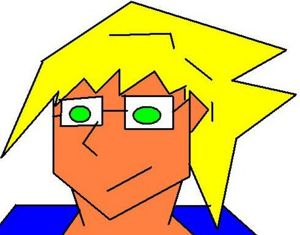

Piriódico:Karurosu entrevista al novio de Falete
 De: La Frikipedia, la enciclopedia extremadamente seria.
De: La Frikipedia, la enciclopedia extremadamente seria.
Karurosu entrevista al novio de Falete
El novio de falete concede una entrevista en esclusiva a Karurosu que se ha hecho pasar por buenafuente

El entrevistado es el novio de este Gran Cantante, con famosas canciones como..., lo dicho, un gran cantante
 Karurosu nervioso antes de la entrevista
Karurosu: Buenas novio de Falete, me alegra que hayas aceptado una entrevista conmigo kar... digo Buenafuente, gracias por venir
Novio de falete: Muchas gracias a tí Andrés, quiero dejar claro que vengo sin cobrar.
- K: Lo has dejado claro, mi primera pregunta es obligada; ¿Sabes como conseguir la materia "Caballeros de la mesa redonda" en el Final Fantasy VII?
- NF: Creo que hay que conseguir un chocobo dorado, cocinarlo y que falete se lo coma, al defecar lo obtendrás.
- K: Muchas gracias, ¿Por que cojones te secuestraste a ti mismo?
- NF: ¿Cuál de ellas? Es que yo casi todos los días me secuestro; cuando me como la comida de Falete, cuando quiero llamar la atención, cuando quiero escaquearme de hacer la cama… es mi rutina.
- K: Ya veo, ¿La última vez porqué fue? ¿Cuándo fue?
- NF: La última vez ha sido hace dos horas, cuando me levantado y no me apetecía venir a la entrevista, pero luego ya lo he pensado mejor al ver el talonario… ¡ah, no que no había! Lo he pensado mejor al ver… que me podía explicar, y ya me he liberado, aunque mi tortura me ha dejado un poco tocado mentalment
- K: Y la vez aquella que sonó tanto en los medios, ¿Por qué fue?
- NF: Pues te voy a decir para que NO fue, no fue para dar publicidad al nuevo disco de Falete.
- K: En una anterior entrevista, una hormiga llorona me dijo que sin su novio, se acababa de un plumazo todos los chistes de humoristas, ¿Estas de acuerdo?
- NF: Quien ha dicho eso es un miserable, con mi chico hacen chistes por que quiere, el día en que se enfade y haga como el monstruo Majin Boo, que se vuelva flaco al echar de su cuerpo toda su bondad, sus vais a cagar.
- K: ¿Eso es posible?
- NF: No lo se, me he torturado tantas veces que ya no se ni lo que digo, como aquella vez que le pegué a un camarero por que le confundí con mi padre que de pequeño me pegaba.
- K: Bueno, quisiera preguntarte por más temas, pero como soy un poco vago, las dejaremos para otro día, cuídese señor novio de Falete
- NF: igualmente señor Andrés Buenafuente
Entrevista: Karurosu. Imagénes: Frikipedia
Autor(es):
- Krusher
- Karurosu
- Plasnisk
- Lljosemll
- Kevrochi
- Gñapero Solitario
Frikipedia 2005-2016, Licencia
GFDL 1.2 - Extraído por FrikiLeaks